The beginning of the semester primarily involved just getting introduced to code. We started with things like Artists Lab, just to learn how to create visuals. Below are some of the first visuals I made with block code.
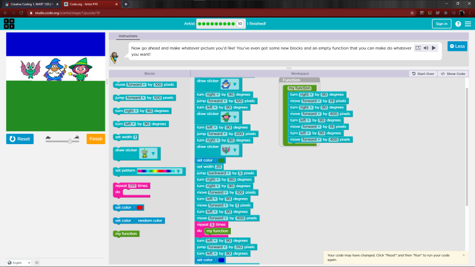
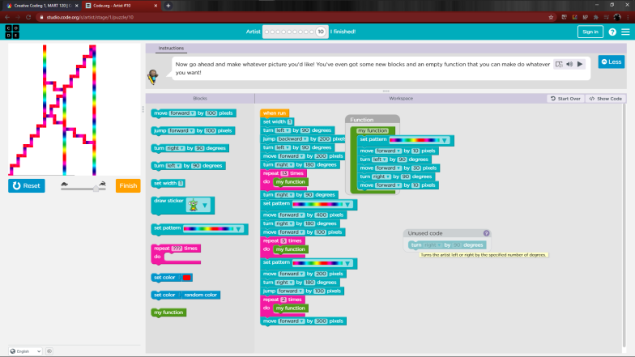
Project 2
Then we went on to Scratch, which still involved block code but allowed a little more freedom. I ended up making a story game, that eventually became a bird-eyes view game called "Save your Frog." I added music, dialogue, and my own assets that were hand-drawn in Photoshop.
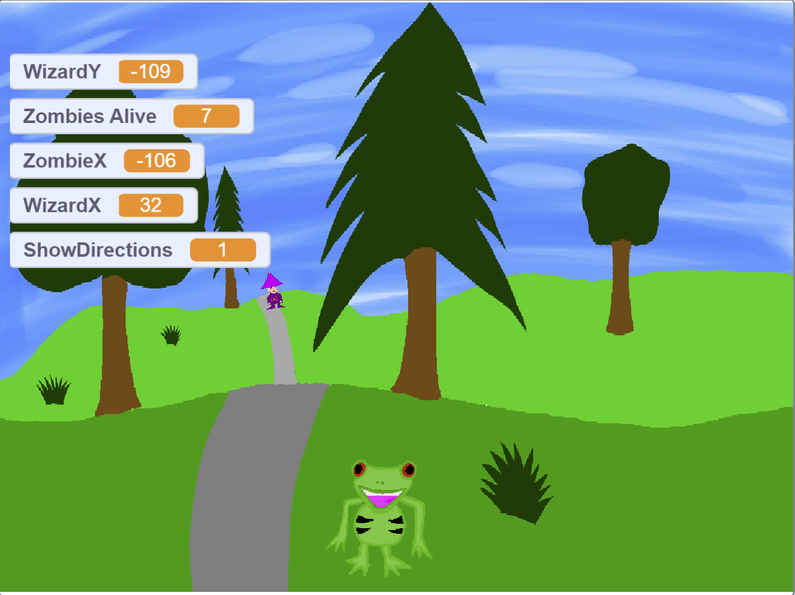
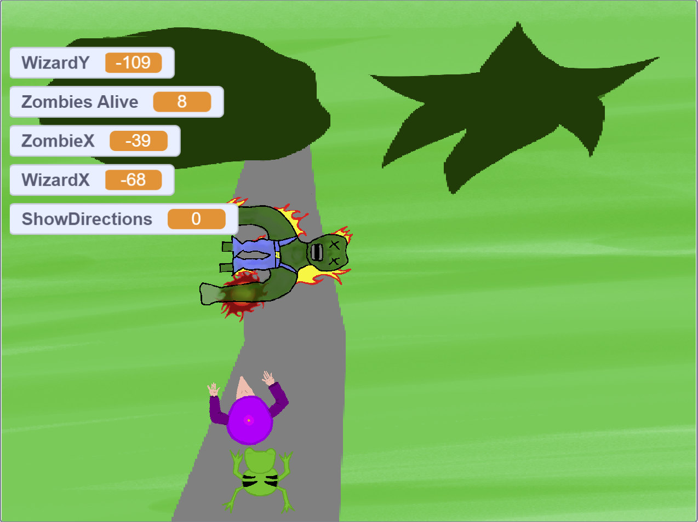
Project 3
For our third project we made a game and an app in Play Lab. The game I made was called "Dragon Chase" and it involed the player running away from two wizards as a dragon for 30 seconds. And the app was a simple sketching app.
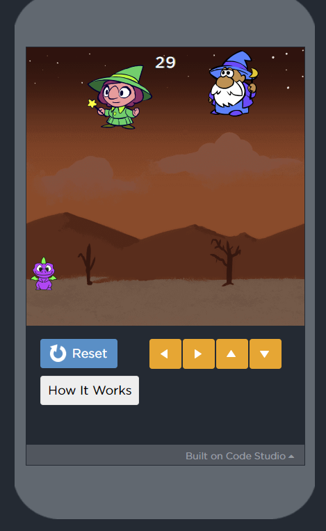
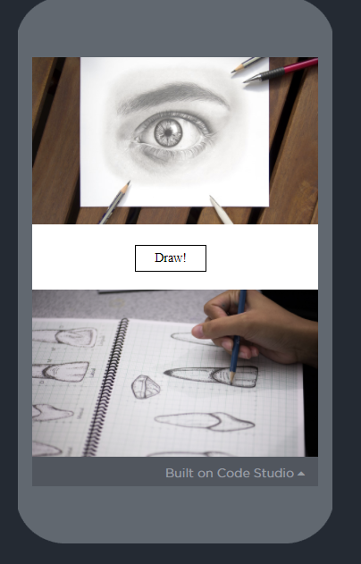
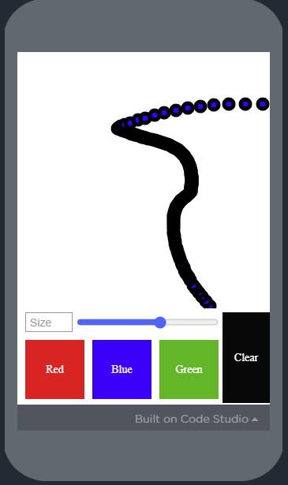
Project 4
Our 4th project was our last thing done with block code. We used an application called "Alice" to make either a game or story. I made a simple short story about Loki, Thor, and Odin that had camera movent, dialogue, character movement, and collision detection.
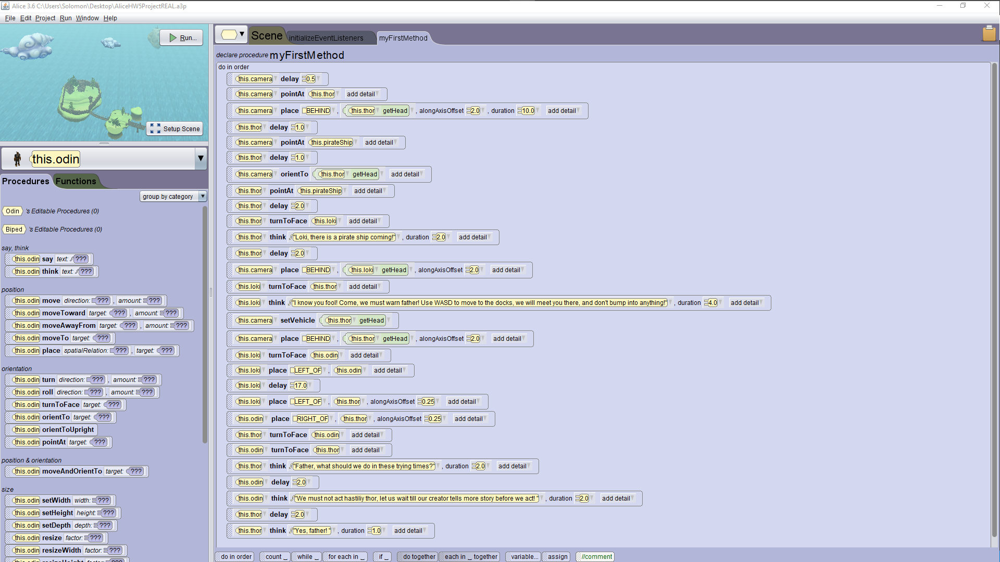
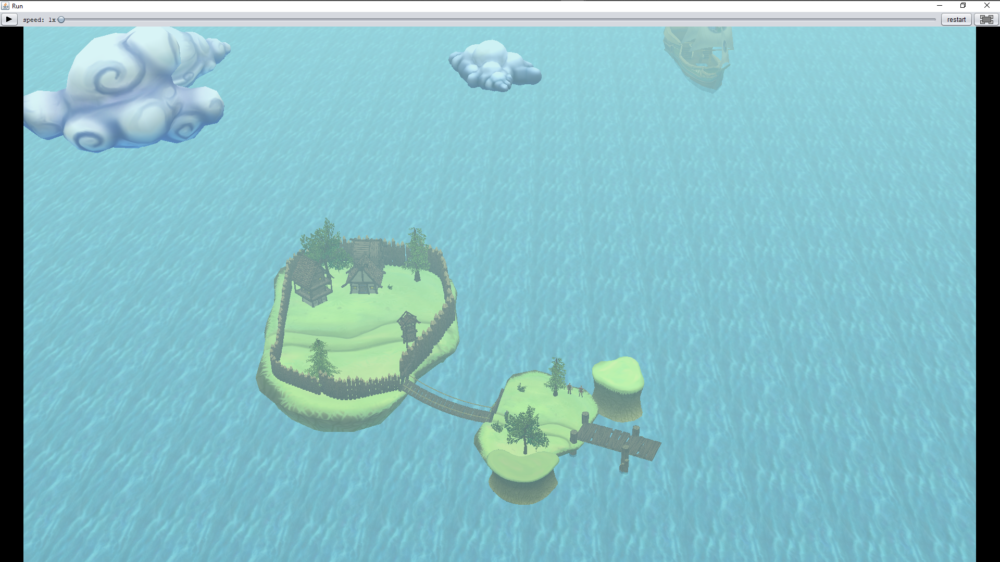
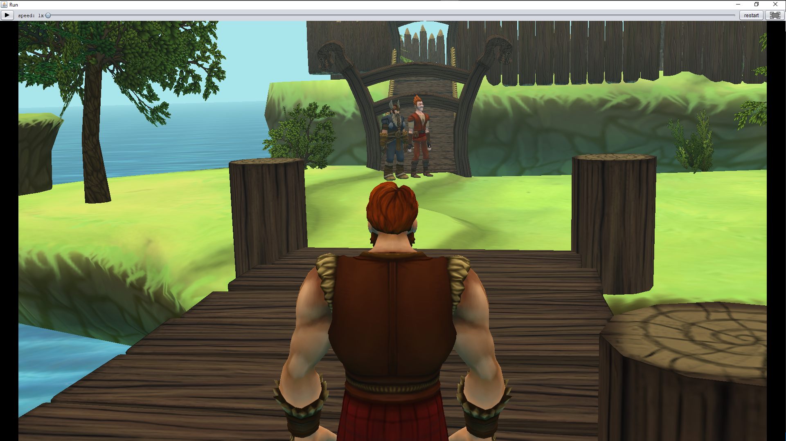
Project 5
The fifth project was to create a website, which is what you see here! It was our first project with no block code, and included hyperlinks, referencing pages, stylizing with CSS, and more.
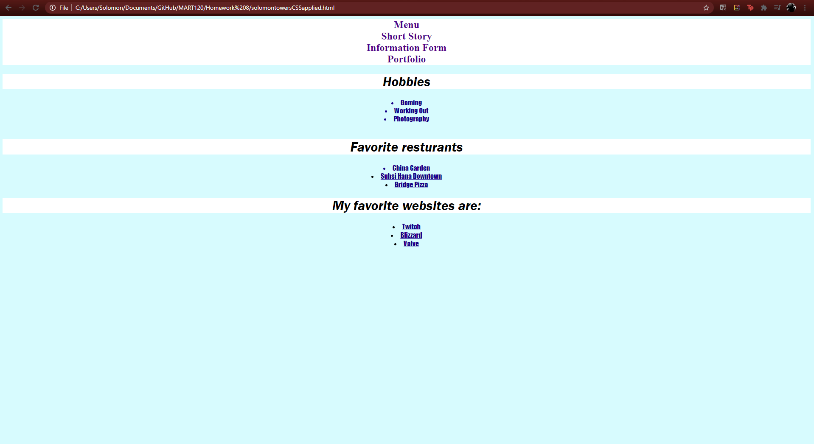
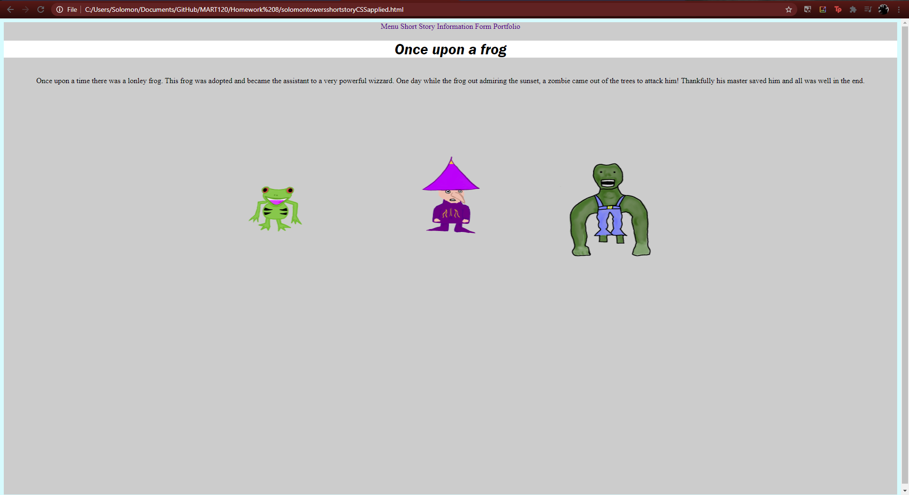
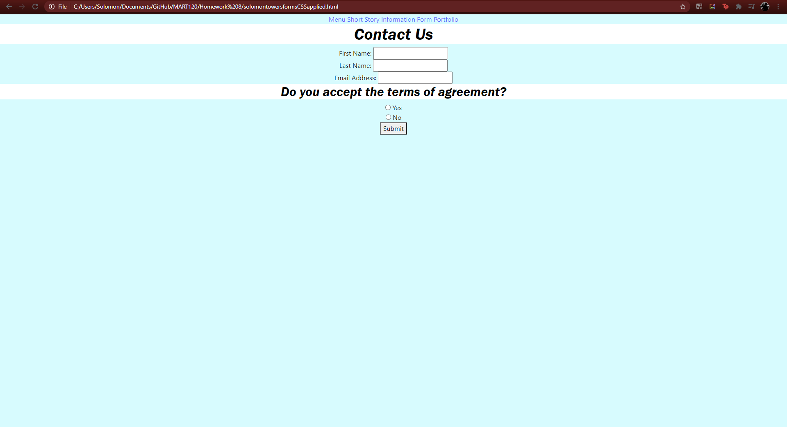
Project 6
After the several weeks on working with our website, we then dove into p5.js, and created a portrait of ourselves!
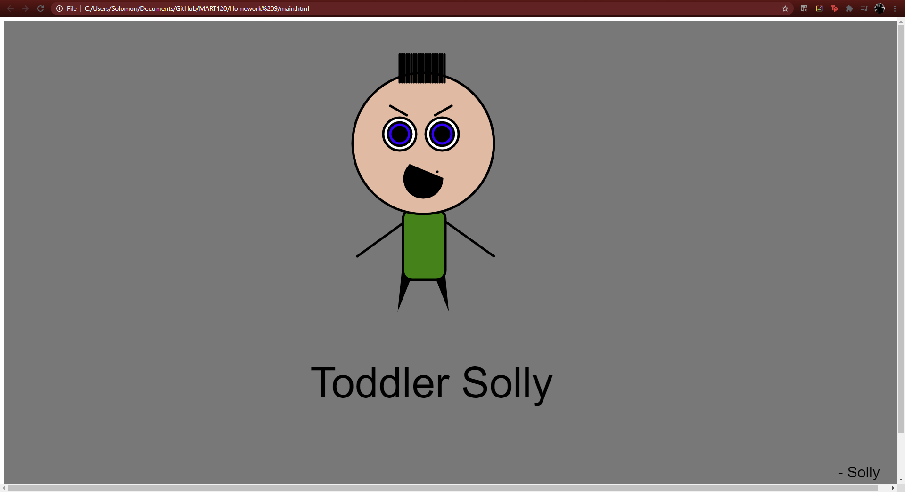
Project 7
We continued to build our skills in p5 by making shapes move during this week!
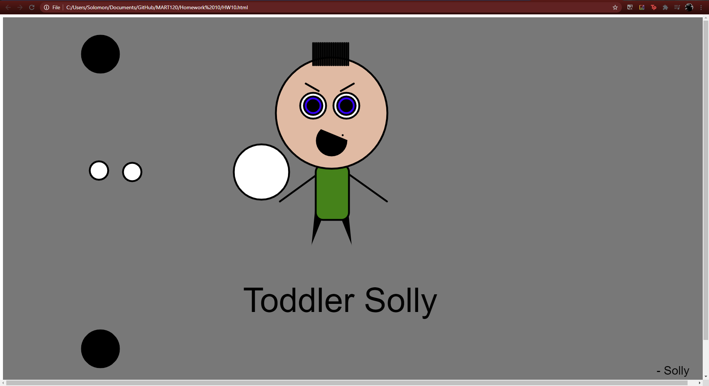
Project 8
After we learned the basic skills of p5, which would be moving and creating objects, we went on to make game! The objective was to build a game where the player had to try to get to the exit without running into any obstacles.We worked several weeks on this, adding functions to create cleaner code after it was initially made. *This project visuals and functions were referenced from Professor Cassens*
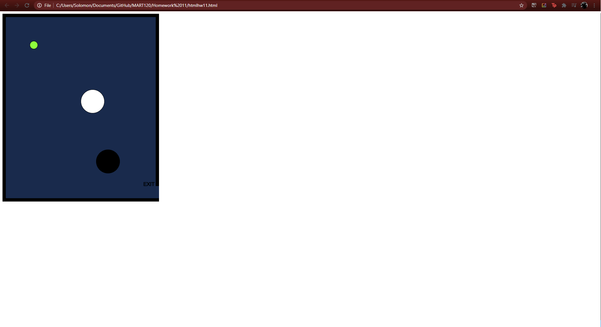
Project 9
Our last project involed the previous, but using arrays to create enemies in order to contorl them easier. This enabled us to easily up the enemy count by only changing one number, instead of many. *This project visuals and functions were referenced from Professor Cassens*
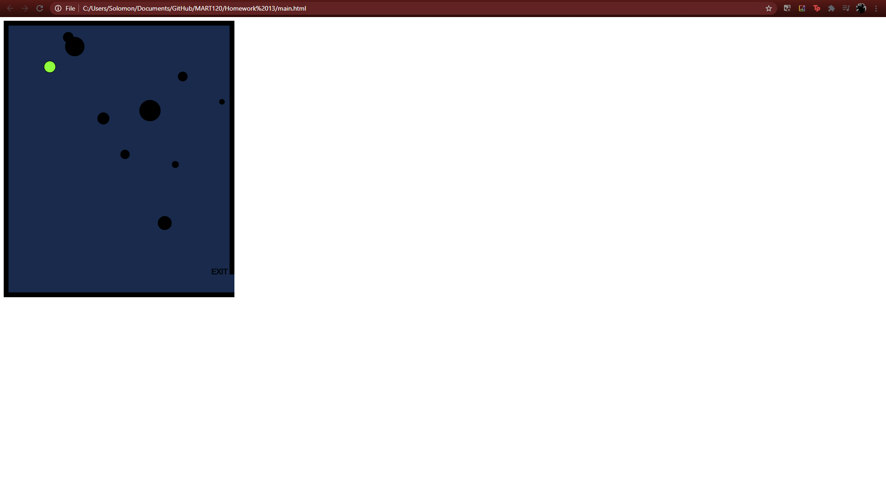